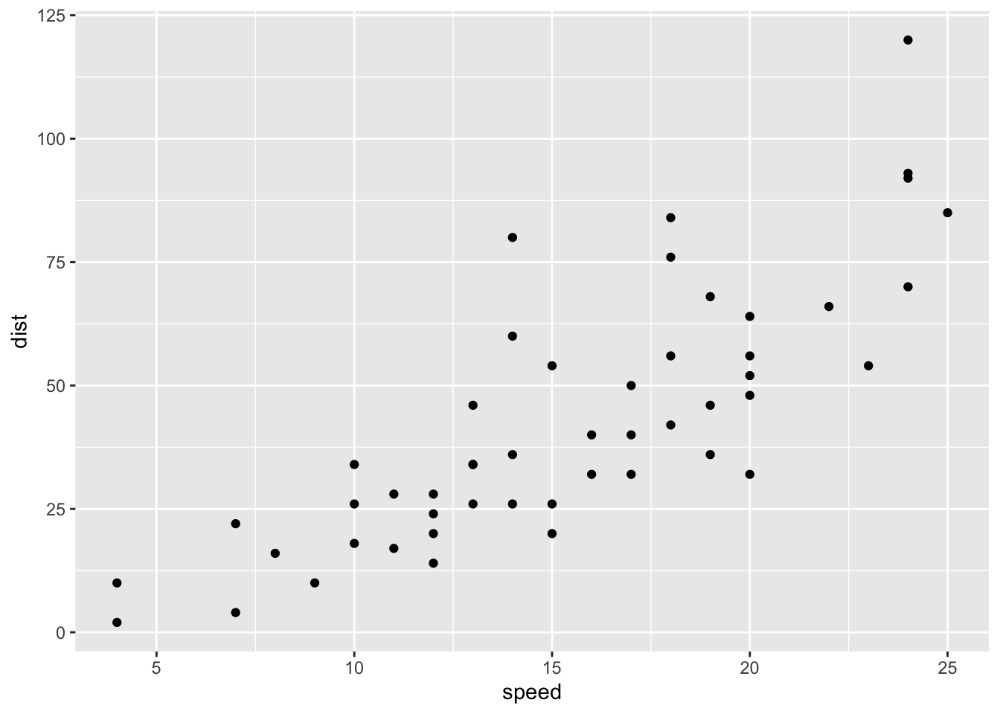
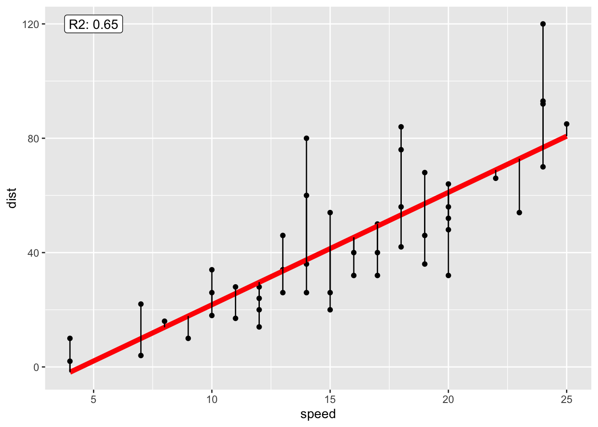

Last updated: 2020-05-19
Checks: 6 1
Knit directory: my_workflowr_project/
This reproducible R Markdown analysis was created with workflowr (version 1.6.2). The Checks tab describes the reproducibility checks that were applied when the results were created. The Past versions tab lists the development history.
The R Markdown is untracked by Git. To know which version of the R Markdown file created these results, you’ll want to first commit it to the Git repo. If you’re still working on the analysis, you can ignore this warning. When you’re finished, you can run wflow_publish to commit the R Markdown file and build the HTML.
Great job! The global environment was empty. Objects defined in the global environment can affect the analysis in your R Markdown file in unknown ways. For reproduciblity it’s best to always run the code in an empty environment.
The command set.seed(20200505) was run prior to running the code in the R Markdown file. Setting a seed ensures that any results that rely on randomness, e.g. subsampling or permutations, are reproducible.
Great job! Recording the operating system, R version, and package versions is critical for reproducibility.
Nice! There were no cached chunks for this analysis, so you can be confident that you successfully produced the results during this run.
Great job! Using relative paths to the files within your workflowr project makes it easier to run your code on other machines.
Great! You are using Git for version control. Tracking code development and connecting the code version to the results is critical for reproducibility.
The results in this page were generated with repository version fb0dff0. See the Past versions tab to see a history of the changes made to the R Markdown and HTML files.
Note that you need to be careful to ensure that all relevant files for the analysis have been committed to Git prior to generating the results (you can use wflow_publish or wflow_git_commit). workflowr only checks the R Markdown file, but you know if there are other scripts or data files that it depends on. Below is the status of the Git repository when the results were generated:
Ignored files:
Ignored: my_workflowr_project/.Rhistory
Ignored: my_workflowr_project/.Rproj.user/
Ignored: my_workflowr_project/data/
Untracked files:
Untracked: my_workflowr_project/analysis/03-regression.Rmd
Untracked: my_workflowr_project/analysis/04-plotting.Rmd
Unstaged changes:
Modified: my_workflowr_project/analysis/_site.yml
Note that any generated files, e.g. HTML, png, CSS, etc., are not included in this status report because it is ok for generated content to have uncommitted changes.
There are no past versions. Publish this analysis with wflow_publish() to start tracking its development.
We’re going to work with the cars dataset
str(cars)'data.frame': 50 obs. of 2 variables:
$ speed: num 4 4 7 7 8 9 10 10 10 11 ...
$ dist : num 2 10 4 22 16 10 18 26 34 17 ...head(cars) speed dist
1 4 2
2 4 10
3 7 4
4 7 22
5 8 16
6 9 10tail(cars) speed dist
45 23 54
46 24 70
47 24 92
48 24 93
49 24 120
50 25 85library(tidyverse)── Attaching packages ──────────────────────────────────────────────────────────────────────────────────────────────────────── tidyverse 1.3.0 ──✓ ggplot2 3.3.0 ✓ purrr 0.3.4
✓ tibble 3.0.1 ✓ dplyr 0.8.5
✓ tidyr 1.0.2 ✓ stringr 1.4.0
✓ readr 1.3.1 ✓ forcats 0.5.0── Conflicts ─────────────────────────────────────────────────────────────────────────────────────────────────────────── tidyverse_conflicts() ──
x dplyr::filter() masks stats::filter()
x dplyr::lag() masks stats::lag()cars %>%
ggplot() + geom_point(aes(x = speed, y = dist))
stop_dist_model <- lm(dist ~ speed, data = cars)
stop_dist_model
Call:
lm(formula = dist ~ speed, data = cars)
Coefficients:
(Intercept) speed
-17.579 3.932 summary(stop_dist_model)
Call:
lm(formula = dist ~ speed, data = cars)
Residuals:
Min 1Q Median 3Q Max
-29.069 -9.525 -2.272 9.215 43.201
Coefficients:
Estimate Std. Error t value Pr(>|t|)
(Intercept) -17.5791 6.7584 -2.601 0.0123 *
speed 3.9324 0.4155 9.464 1.49e-12 ***
---
Signif. codes: 0 '***' 0.001 '**' 0.01 '*' 0.05 '.' 0.1 ' ' 1
Residual standard error: 15.38 on 48 degrees of freedom
Multiple R-squared: 0.6511, Adjusted R-squared: 0.6438
F-statistic: 89.57 on 1 and 48 DF, p-value: 1.49e-12library(broom)
broom::augment(stop_dist_model)# A tibble: 50 x 9
dist speed .fitted .se.fit .resid .hat .sigma .cooksd .std.resid
<dbl> <dbl> <dbl> <dbl> <dbl> <dbl> <dbl> <dbl> <dbl>
1 2 4 -1.85 5.21 3.85 0.115 15.5 0.00459 0.266
2 10 4 -1.85 5.21 11.8 0.115 15.4 0.0435 0.819
3 4 7 9.95 4.11 -5.95 0.0715 15.5 0.00620 -0.401
4 22 7 9.95 4.11 12.1 0.0715 15.4 0.0255 0.813
5 16 8 13.9 3.77 2.12 0.0600 15.5 0.000645 0.142
6 10 9 17.8 3.44 -7.81 0.0499 15.5 0.00713 -0.521
7 18 10 21.7 3.12 -3.74 0.0413 15.5 0.00133 -0.249
8 26 10 21.7 3.12 4.26 0.0413 15.5 0.00172 0.283
9 34 10 21.7 3.12 12.3 0.0413 15.4 0.0143 0.814
10 17 11 25.7 2.84 -8.68 0.0341 15.5 0.00582 -0.574
# … with 40 more rowsbroom::tidy(stop_dist_model)# A tibble: 2 x 5
term estimate std.error statistic p.value
<chr> <dbl> <dbl> <dbl> <dbl>
1 (Intercept) -17.6 6.76 -2.60 1.23e- 2
2 speed 3.93 0.416 9.46 1.49e-12broom::glance(stop_dist_model)# A tibble: 1 x 11
r.squared adj.r.squared sigma statistic p.value df logLik AIC BIC
<dbl> <dbl> <dbl> <dbl> <dbl> <int> <dbl> <dbl> <dbl>
1 0.651 0.644 15.4 89.6 1.49e-12 2 -207. 419. 425.
# … with 2 more variables: deviance <dbl>, df.residual <int>We can now visulize the model fit:
augment(stop_dist_model) %>%
ggplot() + geom_point(aes(speed, dist)) +
geom_line(aes(speed, .fitted), colour = "red", lwd = 2) +
geom_segment(aes(speed, dist, xend = speed, yend = .fitted)) +
geom_label(data = glance(stop_dist_model), aes(x = 5, y = 120, label = paste0("R2: ", round(r.squared, 2))))
Calculate the regression coefficients
x <- cars$speed
y <- cars$dist
Sxy <- sum((x - mean(x)) * (y - mean(y)))
Sxx <- sum((x - mean(x)) ^ 2)
beta_hat_1 <- Sxy / Sxx
beta_hat_0 <- mean(y) - beta_hat_1 * mean(x)
c(beta_hat_0, beta_hat_1)[1] -17.579095 3.932409stop_dist_model
Call:
lm(formula = dist ~ speed, data = cars)
Coefficients:
(Intercept) speed
-17.579 3.932 Calculating the standard error
cur_resid <- residuals(stop_dist_model)
cur_resid 1 2 3 4 5 6 7
3.849460 11.849460 -5.947766 12.052234 2.119825 -7.812584 -3.744993
8 9 10 11 12 13 14
4.255007 12.255007 -8.677401 2.322599 -15.609810 -9.609810 -5.609810
15 16 17 18 19 20 21
-1.609810 -7.542219 0.457781 0.457781 12.457781 -11.474628 -1.474628
22 23 24 25 26 27 28
22.525372 42.525372 -21.407036 -15.407036 12.592964 -13.339445 -5.339445
29 30 31 32 33 34 35
-17.271854 -9.271854 0.728146 -11.204263 2.795737 22.795737 30.795737
36 37 38 39 40 41 42
-21.136672 -11.136672 10.863328 -29.069080 -13.069080 -9.069080 -5.069080
43 44 45 46 47 48 49
2.930920 -2.933898 -18.866307 -6.798715 15.201285 16.201285 43.201285
50
4.268876 manual_resid <- y - (beta_hat_0 + beta_hat_1 * x)
manual_resid [1] 3.849460 11.849460 -5.947766 12.052234 2.119825 -7.812584
[7] -3.744993 4.255007 12.255007 -8.677401 2.322599 -15.609810
[13] -9.609810 -5.609810 -1.609810 -7.542219 0.457781 0.457781
[19] 12.457781 -11.474628 -1.474628 22.525372 42.525372 -21.407036
[25] -15.407036 12.592964 -13.339445 -5.339445 -17.271854 -9.271854
[31] 0.728146 -11.204263 2.795737 22.795737 30.795737 -21.136672
[37] -11.136672 10.863328 -29.069080 -13.069080 -9.069080 -5.069080
[43] 2.930920 -2.933898 -18.866307 -6.798715 15.201285 16.201285
[49] 43.201285 4.268876all.equal(as.numeric(cur_resid), manual_resid)[1] TRUECalculate model variance
se_2 <- sum(manual_resid ^ 2) / (nrow(cars) - 2)
se_2[1] 236.5317sqrt(se_2)[1] 15.37959summary(stop_dist_model)
Call:
lm(formula = dist ~ speed, data = cars)
Residuals:
Min 1Q Median 3Q Max
-29.069 -9.525 -2.272 9.215 43.201
Coefficients:
Estimate Std. Error t value Pr(>|t|)
(Intercept) -17.5791 6.7584 -2.601 0.0123 *
speed 3.9324 0.4155 9.464 1.49e-12 ***
---
Signif. codes: 0 '***' 0.001 '**' 0.01 '*' 0.05 '.' 0.1 ' ' 1
Residual standard error: 15.38 on 48 degrees of freedom
Multiple R-squared: 0.6511, Adjusted R-squared: 0.6438
F-statistic: 89.57 on 1 and 48 DF, p-value: 1.49e-12Calculate a variance decomposition
y_hat <- beta_hat_0 + beta_hat_1 * x
SST <- sum((y - mean(y)) ^ 2)
SSE <- sum((y - y_hat) ^ 2)
SSReg <- sum((y_hat - mean(y)) ^ 2)
R2 <- SSReg / SST
R2[1] 0.6510794summary(stop_dist_model)
Call:
lm(formula = dist ~ speed, data = cars)
Residuals:
Min 1Q Median 3Q Max
-29.069 -9.525 -2.272 9.215 43.201
Coefficients:
Estimate Std. Error t value Pr(>|t|)
(Intercept) -17.5791 6.7584 -2.601 0.0123 *
speed 3.9324 0.4155 9.464 1.49e-12 ***
---
Signif. codes: 0 '***' 0.001 '**' 0.01 '*' 0.05 '.' 0.1 ' ' 1
Residual standard error: 15.38 on 48 degrees of freedom
Multiple R-squared: 0.6511, Adjusted R-squared: 0.6438
F-statistic: 89.57 on 1 and 48 DF, p-value: 1.49e-12Calculating the standard errors of the regression coefficients
Sxx <- sum((x - mean(x)) ^ 2)
s_e <- sqrt(se_2)
n <- nrow(cars)
SE_beta_hat_0 <- s_e * sqrt(1 / n + mean(x) ^ 2 / Sxx)
SE_beta_hat_1 <- s_e / sqrt(Sxx)
c(SE_beta_hat_0, SE_beta_hat_1)[1] 6.7584402 0.4155128tidy(stop_dist_model)# A tibble: 2 x 5
term estimate std.error statistic p.value
<chr> <dbl> <dbl> <dbl> <dbl>
1 (Intercept) -17.6 6.76 -2.60 1.23e- 2
2 speed 3.93 0.416 9.46 1.49e-12Calculate the t statistic
t_beta_hat_0 <- (beta_hat_0 - 0) / SE_beta_hat_0
t_beta_hat_1 <- (beta_hat_1 - 0) / SE_beta_hat_1
c(t_beta_hat_0, t_beta_hat_1)[1] -2.601058 9.463990tidy(stop_dist_model)# A tibble: 2 x 5
term estimate std.error statistic p.value
<chr> <dbl> <dbl> <dbl> <dbl>
1 (Intercept) -17.6 6.76 -2.60 1.23e- 2
2 speed 3.93 0.416 9.46 1.49e-12Calculate the p-value
p_beta_hat_0 <- 2 * pt(abs(t_beta_hat_0), df = nrow(cars) - 2, lower.tail = FALSE)
p_beta_hat_1 <- 2 * pt(abs(t_beta_hat_1), df = nrow(cars) - 2, lower.tail = FALSE)
sessionInfo()R version 4.0.0 (2020-04-24)
Platform: x86_64-apple-darwin17.0 (64-bit)
Running under: macOS Catalina 10.15.4
Matrix products: default
BLAS: /Library/Frameworks/R.framework/Versions/4.0/Resources/lib/libRblas.dylib
LAPACK: /Library/Frameworks/R.framework/Versions/4.0/Resources/lib/libRlapack.dylib
locale:
[1] en_US.UTF-8/en_US.UTF-8/en_US.UTF-8/C/en_US.UTF-8/en_US.UTF-8
attached base packages:
[1] stats graphics grDevices utils datasets methods base
other attached packages:
[1] broom_0.5.6 forcats_0.5.0 stringr_1.4.0 dplyr_0.8.5
[5] purrr_0.3.4 readr_1.3.1 tidyr_1.0.2 tibble_3.0.1
[9] ggplot2_3.3.0 tidyverse_1.3.0 workflowr_1.6.2
loaded via a namespace (and not attached):
[1] tidyselect_1.0.0 xfun_0.13 haven_2.2.0 lattice_0.20-41
[5] colorspace_1.4-1 vctrs_0.2.4 generics_0.0.2 htmltools_0.4.0
[9] yaml_2.2.1 utf8_1.1.4 rlang_0.4.6 later_1.0.0
[13] pillar_1.4.4 withr_2.2.0 glue_1.4.0 DBI_1.1.0
[17] dbplyr_1.4.3 modelr_0.1.7 readxl_1.3.1 lifecycle_0.2.0
[21] munsell_0.5.0 gtable_0.3.0 cellranger_1.1.0 rvest_0.3.5
[25] evaluate_0.14 labeling_0.3 knitr_1.28 httpuv_1.5.2
[29] fansi_0.4.1 Rcpp_1.0.4.6 promises_1.1.0 backports_1.1.6
[33] scales_1.1.0 jsonlite_1.6.1 farver_2.0.3 fs_1.4.1
[37] hms_0.5.3 digest_0.6.25 stringi_1.4.6 grid_4.0.0
[41] rprojroot_1.3-2 cli_2.0.2 tools_4.0.0 magrittr_1.5
[45] crayon_1.3.4 pkgconfig_2.0.3 ellipsis_0.3.0 xml2_1.3.2
[49] reprex_0.3.0 lubridate_1.7.8 rstudioapi_0.11 assertthat_0.2.1
[53] rmarkdown_2.1 httr_1.4.1 R6_2.4.1 nlme_3.1-147
[57] git2r_0.27.1 compiler_4.0.0